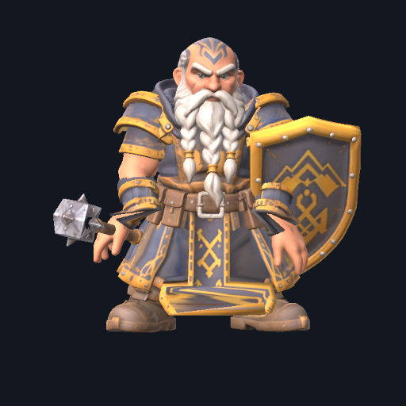
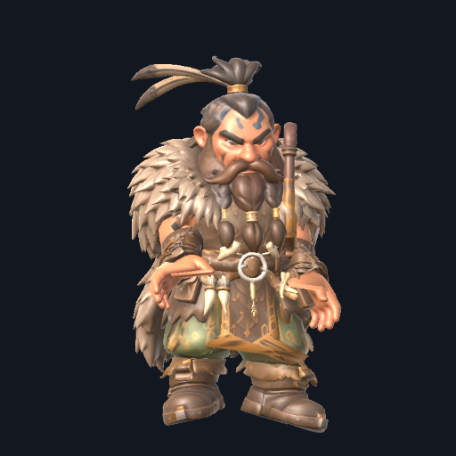
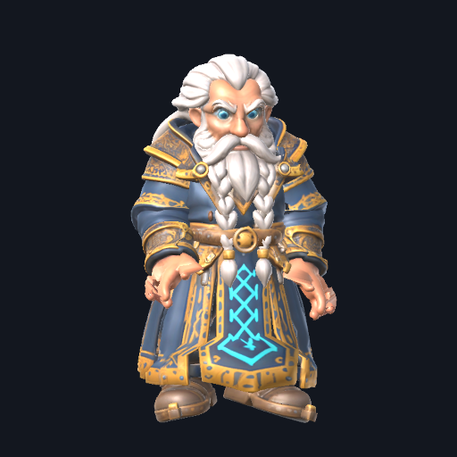
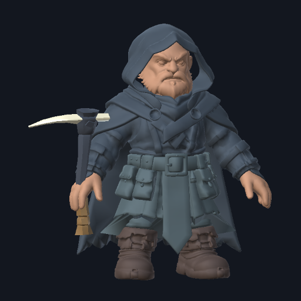
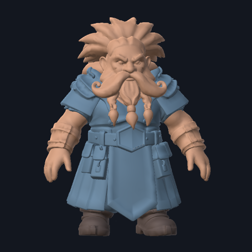
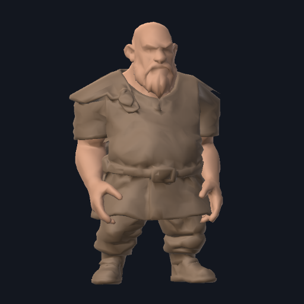

15 – Helden
Ein Held entscheidet selbst, ob er einer Vision folgt, sich einer Gruppe anschließt oder nach einem langen Kampf einkehrt. Sein Beruf, seine Mentalität und sein augenblicklicher Zustand prägen diese Wahl. Zwei Helden derselben Klasse können sich im Laufe einer Partie ganz unterschiedlich entwickeln.
Aktueller Spielstand · Helden und Arbeiter · 27.11.2026
Normalstart: zwei Arbeiter und ein anreisender Zufallsheld. Neue Helden erscheinen am nächstgelegenen erreichbaren Kartenrand und laufen zum Haupthaus. Erst bei der Ankunft treten sie der Fraktion bei und liefern eigene Sicht. Die erste vollständig gebaute Taverne löst einmalig die gleiche Anreise für zwei weitere Zufallshelden aus. Im Haupthaus können höchstens zwei zusätzliche Arbeiter für je 50 Gold ausgebildet werden; vorläufig acht Sekunden pro Ausbildung, eine gleichzeitig. Die frühere Fünf-Helden-/Drei-Arbeiter-Aufstellung ist nur noch ein Inspector-Testmodus.






Helden besuchen die Taverne und können dort freiwillig einer Einladung folgen. Führung berücksichtigt Charisma und Glaube; Gesundheit und Mut beeinflussen die Teilnahme. Die Gruppe erhält einen Namen und zieht gemeinsam zu einer entdeckten starken Höhle. Krieger sind Tanks, Runendieb, Jäger und Runenschreiber verursachen Schaden, Tüftler heilen und bevorzugen verletzte Tanks. Es besteht keine Pflicht zu einer vollständigen Rollenbesetzung. Stark verletzte Mitglieder verlassen die Gruppe; ohne Anführer oder nach Zerstörung des Ziels löst sie sich auf.
Waffenbeute wird innerhalb der Gruppe nach NEED vergeben: erlaubte Waffenverbesserung vor Besitzanspruch des letzten Angreifers. Nicht benötigte, nicht angelegte Waffen können Helden nahe der Taverne an geeignete Käufer verkaufen. Der vorläufige Preis beträgt zehn Gold pro Seltenheitsrang; Gold wird zwischen den persönlichen Konten übertragen.
Ein erlaubter, besserer Waffenfund wird automatisch angelegt und ersetzt die Handwaffe sichtbar. Alle 15 vorhandenen Schwert-, Axt- und Dolchvarianten sind verknüpft. Der Runendieb flankiert verborgen und versucht, von hinten zuzustechen; der erste Stich beendet die Tarnung. Magier verbrauchen 15 Mana pro Zauber. Ohne ausreichendes Mana warten sie; auch die Angriffsanimation startet dann nicht. Manaregeneration bleibt attributabhängig; Magier und heilende Tüftler zeigen unter vollem Vorrat einen Manabalken.
Wie Helden ins Volk kommen
Eine Taverne kann Abenteurer anlocken. Für Kasernen beschreibt die Detailvision einen zweiten Weg, auf dem Bauern zu Helden werden können. Erscheint ein neuer Held, stehen seine klassenabhängig ausgewürfelten Attribute fest. Der Gott kann einen ungünstigen Wurf weder ablehnen noch durch eine andere Figur ersetzen.
Direkte Heldenausbildung bleibt ausgeschlossen; die neue Arbeiter-Ausbildung im Haupthaus ist ausdrücklich erlaubt. Offen bleibt, ob und unter welchen Bedingungen ein Bauer selbst den Weg in die Kaserne und damit den Übergang zum Helden wählt.
Elf Attribute beim Eintritt
Der Held verteilt selbstständig 30 Punkte auf Stärke, Konstitution, Intuition, Wissen, Mut, Charisma, Agilität, Glaube, Mystik, Fokus und Wut. Bei der Rekrutierung liegt jedes Attribut zwischen 0 und 6 einschließlich. Der Referenzwert ist 3. Jeder darunterliegende Punkt bringt Abzüge, jeder darüberliegende Punkt Boni auf die zugehörigen abgeleiteten Werte.
Offen bleibt, wie die Klasse die Verteilung der Startpunkte gewichtet. Spätere außergewöhnliche Attributänderungen durch Magie oder besondere Tränke sind eine Idee.
Die 17 abgeleiteten Werte
Die Herkunft jedes Werts soll in der Heldenübersicht nachvollziehbar sein. Die Attributpaare sind festgehalten. Faktoren, Grundbeträge, Rundung und Obergrenzen stehen noch zur Entscheidung.
| Wert | Attribute | Wirkung |
|---|---|---|
| Mana | Wissen + Mystik | verfügbarer Manavorrat |
| Mana-Regeneration | Mystik + Fokus | Manazuwachs pro Sekunde |
| Gesundheit | Konstitution + Stärke | maximale Lebenspunkte |
| Lebensregeneration | Konstitution + Fokus | Zuwachs an Lebenspunkten pro Sekunde |
| Sichtweite | Intuition + Wissen | Radius der sichtbaren Umgebung |
| Loyalität | Fokus + Glaube | Bereitschaft, einen Auftrag anzunehmen oder bei der eigenen Truppe zu bleiben |
| Angriffsschaden | Stärke + Wut | Schaden einer Nahkampfwaffe |
| Angriffsgeschwindigkeit | Agilität + Intuition | Angriffe pro Sekunde |
| Magieresistenz | Glaube + Wut | Verringerung erlittenen arkanen Schadens |
| Ausweichen | Intuition + Agilität | Chance, einem gewöhnlichen Nah- oder Fernkampftreffer zu entgehen |
| Arkanwiderstand | Glaube + Mystik | Chance, einem arkanen Treffer vollständig zu entgehen |
| Führung | Glaube + Charisma | Aussicht auf Gruppenführung und Einfluss auf andere |
| Lernen | Mystik + Wissen | Anzahl und Lerngeschwindigkeit von Zaubern |
| Lauftempo | Agilität + Konstitution | Bewegungsgeschwindigkeit |
| Trefferchance | Intuition + Fokus | Trefferwahrscheinlichkeit mit gewöhnlichen Nah- und Fernkampfangriffen |
| Arkantrefferchance | Mystik + Intuition | Trefferwahrscheinlichkeit mit arkanen Angriffen |
| Standhaftigkeit | Wut + Glaube | Bereitschaft, auch stärkeren oder zahlreicheren Gegnern standzuhalten |
Nach Berechnung des Normalwerts werden feste Boni und Mali aus Ausrüstung, Zaubern, Tränken und anderen Einflüssen addiert. Die Übersicht weist jeden Beitrag aus. Die ältere Kampfbeschreibung führt zusätzlich Rüstung auf. Für sie ist bisher keine Ableitung aus einem Attributpaar beschrieben.
Erfahrung, Aufstieg und Talente
Ein Held sammelt Erfahrung, wenn er Monster oder gegnerische Helden tötet, Orte erkundet oder Gebäude und Monsterhöhlen zerstört. Bei jedem Aufstieg verteilt er drei Attributspunkte selbst. Ein einzelnes Attribut kann dabei bis auf 10 steigen. Die vorgesehene Stufenobergrenze ist 20 und soll sich für die Spielbalance ändern lassen.
Zusätzlich erhält der Held je Stufe einen Talentpunkt. Pro Klasse stehen drei Talentbäume zur Verfügung. Ein Held kann darin Stärken vertiefen oder Schwächen ausgleichen, etwa indem er einen Wert verbessert oder seine Angriffsart weiterentwickelt. Knoten, Freischaltbedingungen und Erfahrungsschwellen sind noch offen.
Erholung und Bevölkerungsdruck
Lebende Helden heilen langsam durch Regeneration. Zur Rast können sie ein Gasthaus oder ihre Gilde aufsuchen. Erreichen die Lebenspunkte null, stirbt der Held an Ort und Stelle. Das Kapitel Kampf beschreibt die Rückkehr durch ein göttliches Kraftopfer.
Bis einschließlich 30 eigene Helden fällt kein Überbevölkerungsmalus an. Beim 31. Helden greift erstmals ein Abzug von fünf Prozent für alle eigenen Helden; die folgenden Stufen liegen jeweils fünf weitere Helden auseinander. Zu klären bleiben die Reihenfolge von Prozentabzügen und festen Modifikatoren sowie die Berechnung der folgenden Stufen.
Wie ein Held seine nächste Handlung wählt
Ein Held kann trainieren, Ausrüstung kaufen, fliehen, kämpfen, erkunden, sich einer Gruppe anschließen oder rasten. Er bewertet die verfügbaren Möglichkeiten nach ihrem Nutzen in der konkreten Situation. Eine Zustandsmaschine führt die gewählte Handlung aus. Eine Wechselhürde (Hysterese) verhindert, dass etwa ein kaum veränderter Trainingsanreiz eine begonnene Rast fortlaufend unterbricht.
Der Entscheidungsgrund (decisionReason) und die drei höchstbewerteten Alternativen sollen die Auswahl nachvollziehbar machen. Bei einem Wechsel blendet das neue Aktionssymbol ein, bleibt drei Sekunden sichtbar und blendet wieder aus. Danach sehen Spieler das Symbol nur am ausgewählten Helden. Den Weg zum gewählten Ziel sucht der Held selbst. Seine Sichtweite bestimmt, wie viel Gebiet er dabei um sich herum aufdeckt.
Profil, Verletzungen und persönliche Funde
Das Profil folgt Olivers Heldenvorlage. Ein Bodenring kennzeichnet den ausgewählten Helden. Unter 100 Prozent Gesundheit erscheint sein Lebensbalken. Funde übernimmt er in sein eigenes Inventar. Profil und Ausrüstungsregeln
Der Krieger im Flusstal
Der gerüstete Krieger trägt Schild und Waffe. Die Waffe ist im FBX an der rechten Hand gebunden und bewegt sich beim Gehen und Zuschlagen mit ihr. Im Windows-Spiel spielte der Animator sieben unterschiedliche Clips ab: Bereit, Gehen, Rennen, Kämpfen, Aufheben, Bezahlen und Sterben. Der Kauf an der Schmiede löste Bezahlen aus, ein tödlicher Treffer Sterben. Für jedes Verhalten liegen Spiel- und Detailansichten derselben Framephase vor.
Der Wechsel einzelner Waffen und Rüstungen ist eine eigene Aufgabe. Windows-Nachtest mit Spielbildern · Modularer Ausrüstungswechsel
Fünf Heldentypen im aktuellen Unity-Prototyp · 27.11.2026
Im optionalen Testmodus stehen Krieger, Zwergenjäger, Runenschreiber, Runendieb und Tüftler gleichzeitig bereit. Der Normalstart verwendet die oben beschriebene Anreise. Der Krieger verteidigt bevorzugt die Siedlung. Jäger und Dieb erkunden weiter entfernte Bereiche und decken dabei den Kriegsnebel auf. Der Dieb schleicht mit einem dunklen, halbtransparenten Tarneffekt an Gegner heran; sein erster Stich beendet die Tarnung. Kritischer Zusatzschaden folgt später. Der Tüftler hilft beim Bauen und Reparieren.
Der Jäger lädt, zielt und schießt einen sichtbaren Pfeil innerhalb seiner Reichweite. Schaden entsteht erst beim Aufprall; anschließend verschwindet das Geschoss. Der Runenschreiber ist Fernkampfmagier und verwendet zunächst einen einfachen Magieeffekt. Unter vollem Mana erscheint eine zusätzliche blaue Leiste; Mana regeneriert nach seinem Heldenwert. Gebäude blockieren Helden und Monster, Rast in der Taverne schützt den Helden vor Angriffen.
Die Arbeiter verwenden das aufbereitete Arbeitermodell, laufen auch in freien Phasen umher und unterbrechen dies für Aufträge. Teilmodelle von Dieb, Tüftler und Arbeiter besitzen einfache Rigs und Animationen. Die Zwergenhöhe beträgt 1,4 Meter, die Testzombies 1,8 Meter. Waffenberechtigungen werden je Heldenklasse im Figurenmanager gepflegt. Aufgenommene bessere, erlaubte Waffen verbessern den Ausrüstungsrang; ungeeignete Funde bleiben im persönlichen Inventar. Der sichtbare Handwaffenwechsel für vorhandene Waffen ist umgesetzt; die vollständige modulare Rüstung bleibt offen.